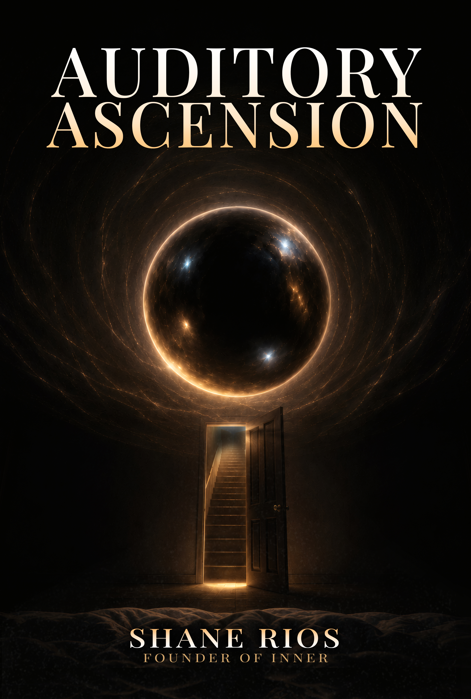

Inner / Books
Auditory Ascension
An Inner Axiom
The ideas and practice behind the Chambers — how the brain responds to structured sound, how far that might shape states of consciousness, and how to use auditory environments as a deliberate tool for inner work.
About the Book
Sound is not decoration.
Most people treat audio as background. Something to fill silence, to manage mood, to pass time. But sound does more than that: it can change how calm or stressed we feel, and the brain measurably tracks its rhythms. Auditory Ascension begins from a further premise: that a carefully built sonic environment, used with understanding, might help some people reach states they otherwise meet only by accident. How far that holds is an open question, and it is the one this book explores.
The Inner Chambers are built on that premise. Their design is not mystical — it's architectural. They use specific patterns of spatial sound, harmonic tension and release, and rhythmic pulse. Some of what's known here is solid: rhythmic sound produces measurable responses in the brain, and researchers use the term entrainment for the way neural activity can synchronize with a rhythm. What isn't established is how far that carries.
A measurable neural response to sound is not the same thing as entering a particular state of consciousness.
This book explores the ideas behind the Chambers, what we know about the brain's response to sound, and where the explanations remain uncertain.
Auditory Ascension covers the psychoacoustics behind the Chambers, what neuroscience does and doesn't tell us about how the brain responds to sound, how to work with auditory environments intentionally rather than passively, and what repetition might add. It is both a theoretical foundation and a practical guide — written for the practitioner who wants to understand what they are doing, and where the evidence ends.
This is a map of the territory the Chambers ask you to enter, marked where the evidence runs out. You don't need it to begin. But understanding it can change how you listen — and what you notice.
What the Book Covers
Five dimensions of auditory practice.
Each dimension builds on the last — a complete framework for understanding and working with sound as a tool for inner exploration.
-
Dimension I
The Nervous System as Instrument
Sound doesn't just reach the ears — it plays the body. This section covers what research shows about how sound and music can affect arousal and stress, and how the Chambers are designed to invite a downshift out of evaluation mode and toward rest.
-
Dimension II
Entrainment and the Question of State
The brain is rhythmic by nature, and it measurably responds to rhythm: it tracks a beat, and attention can anticipate regular timing. Researchers use the term entrainment — the tendency of oscillating systems to synchronize — for how neural activity may couple to rhythmic sound, and how far that explains perception and attention is still debated. This section explains the concept, and why a measurable response to sound is not, by itself, a particular state of consciousness. Auditory Ascension proposes that structured sound may support certain states. Whether it can guide a listener to a chosen one is an open question.
-
Dimension III
Spatial Sound and Presence
Three-dimensional audio isn't a gimmick. The research on it is still young, but in one EEG study of film viewers, surround sound produced a stronger brain response than mono sound, which the researchers interpret as a heightened sense of presence. This section covers how the Chambers use depth and placement so that sound is heard as an environment rather than a track, and proposes that this may help hold attention steady long enough for depth to emerge.
-
Dimension IV
Repetition and Learned Association
Most audio is designed to entertain. The Chambers are designed to be returned to. Repeated exposure can build familiarity and learned associations — a sound can come to cue a way of paying attention — and it can also lead to habituation, where a response fades. This section explores why the Chambers ask you to return to the same sonic environment rather than seek novelty, and proposes that familiarity may let analysis quiet down and attention settle. Whether that deepens anything is the book's hypothesis, and one worth testing in your own practice.
-
Dimension V
The Ascension Arc
What the book proposes might become possible when these ideas are practiced together — a progression from surface calm toward greater depth, encounters with hypnagogic states or lucid-adjacent awareness near sleep, and, over time, a different relationship to stillness, sound, and inner experience. These are possibilities the book explores, not outcomes it promises.
Who This Is For
The ideas behind what you may already be experiencing.
Auditory Ascension is written for Inner practitioners who have already felt something shift during a Chamber session and want a framework for thinking about what they experienced. You can use the Chambers without this book. The practice is complete on its own terms.
But some practitioners find that understanding deepens the experience — that knowing why the sound is structured the way it is helps them stop trying to analyze it and start trusting it, that understanding the ideas about entrainment helps them relax into repetition rather than looking for novelty, that having a framework for what might be happening in the body makes it easier to settle into depth.
If you've ever wondered what the Chambers are doing, this is one way of thinking about it, and an honest account of where the thinking stops.